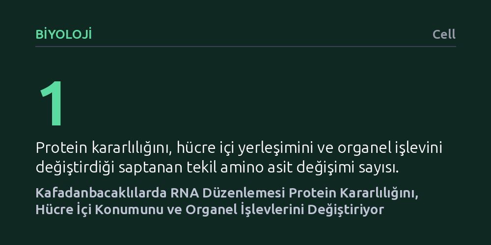

BIYOLOJI · Cell · 2026-10-18
Araştırmacılar, kafadanbacaklılardaki yaygın RNA düzenlemesinin proteinler üzerindeki işlevsel sonuçlarını proteom analiziyle inceledi. Tespit edilen tek amino asitlik değişimlerin; protein kararlılığını, hücre içi konumlanmayı, çevrim sonrası değişimleri ve organel işlevlerini doğrudan farklılaştırdığı gösterildi.
Genetik kodun sabit bir şablon olduğu kabulünü esneterek, canlıların DNA dizilimini değiştirmeden protein havuzunu ve hücresel işlevlerini nasıl çeşitlendirebildiğini gösteriyor.

Moleküler biyolojinin uzun yıllardır süregelen temel kabullerinden biri, hücredeki proteinlerin doğrudan DNA'daki genetik harflere göre üretildiğidir. Bir proteinin amino asit dizilimi ve dolayısıyla yapacağı iş, genomdaki şifreyle belirlenir. Ancak ahtapot, kalamar ve mürekkep balığı gibi koleoid kafadanbacaklılar bu kuralı belirgin bir biçimde esnetir. Bu canlılar, DNA'dan kopyalanan haberci RNA moleküllerini hücre içinde yoğun bir biçimde kimyasal değişikliğe uğratarak DNA'da yazılı olandan farklı proteinler üretebilirler.
Bilim insanlarının uzun süredir yanıt aradığı asıl soru, bu yaygın düzenleme faaliyetinin hücrede gerçekten işlevsel bir karşılığı olup olmadığıydı. Genetik dizileme yöntemleriyle kafadanbacaklılarda on binlerce RNA düzenleme noktası keşfedilmişti; fakat bu değişikliklerin ne kadarının çalışan proteinlere dönüştüğü ve hücre yaşamında somut bir fark yaratıp yaratmadığı bilinmiyordu. Bu düzenlemeler işlevsel bir amaca hizmet etmiyorsa, hücresel mekanizmanın göz ardı edilebilir yan ürünlerinden ibaret kalabilirdi.
Araştırmacılar, sorunun yanıtına ulaşmak için doğrudan hücrenin protein envanterine, yani proteoma odaklandılar. Sadece RNA dizilimini okumak yeterli bir kanıt sunmuyordu; çünkü düzenlenen her RNA molekülü kararlı bir proteine dönüşmeyebilir ya da üretilen protein hücre tarafından hızla ortadan kaldırılabilirdi. Bu nedenle araştırma ekibi, kafadanbacaklı dokularından elde edilen proteinleri kütle spektrometrisi temelli ileri proteomik yöntemlerle mercek altına aldı.
Proteinlerin özel enzimlerle küçük peptit parçalarına ayrılarak kütlelerinin hassas biçimde ölçüldüğü bu deneysel süreç, yeniden kodlanan amino asit bölgelerinin doğrudan tespit edilmesini sağladı. Böylece araştırmacılar, teorik tahminlerin ötesine geçerek RNA düzenlemesinin protein havuzundaki gerçek varlığını ve miktarını doğrudan kanıtlamış oldular.
Elde edilen proteomik veriler, RNA üzerindeki tek bir amino asitlik değişimin bile protein davranışlarını kökten değiştirebildiğini ortaya koydu. İncelenen proteinlerde bu tekil değişimlerin, proteinin hücresel ortamdaki kararlılığını doğrudan etkileyerek ömrünü uzatıp kısaltabildiği tespit edildi. Bununla birlikte, proteinin hücre içinde nereye gideceğini belirleyen yönlendirme sinyalleri de değişiyor; böylece protein alışılmışın dışında farklı hücre altı bölgelerde konumlanabiliyordu.
Araştırma ayrıca tekil düzenlemelerin çevrim sonrası değişimleri ve organel düzeyindeki etkinlikleri de doğrudan başkalaştırdığını gösterdi. Örneğin bir proteinin hücre sinyallerine yanıt olarak fosfat grubu bağlama kapasitesi bu düzenlemeyle değişebiliyor; bu da hücrenin enerji santrali veya iletişim merkezleri gibi hayati organellerin çalışma verimini doğrudan etkileyebiliyordu.
Bu bulgular, kafadanbacaklıların değişken çevre koşullarına nasıl uyum sağladığına dair ufkumuzu genişletmektedir. Bir canlının DNA'sında kalıcı mutasyonlar biriktirerek evrimleşmesi kuşaklar boyu süren, yavaş ve geri dönüşü zor bir süreçtir. Buna karşılık RNA düzenlemesi, canlıya aynı genetik şablonu koruyarak farklı dokularda ya da değişen ortam koşullarında özelleşmiş farklı protein çeşitleri üretme imkanı tanımaktadır.
Kafadanbacaklıların karmaşık sinir sistemleri, zengin davranış repertuvarları ve derin denizlerden sığ sulara uzanan yaşam alanları göz önüne alındığında, proteomun bu şekilde çeşitlendirilmesi biyolojik esnekliğin güçlü bir mekanizmasını gözler önüne sermektedir. Çalışma, genetik bilginin yalnızca sabit bir kütüphaneden ibaret olmadığını, hücrenin bu bilgiyi anlık gereksinimlerine göre ustalıkla yeniden yazabildiğini somut olarak kanıtlamaktadır.